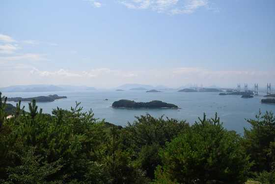
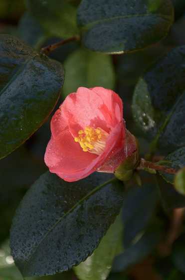
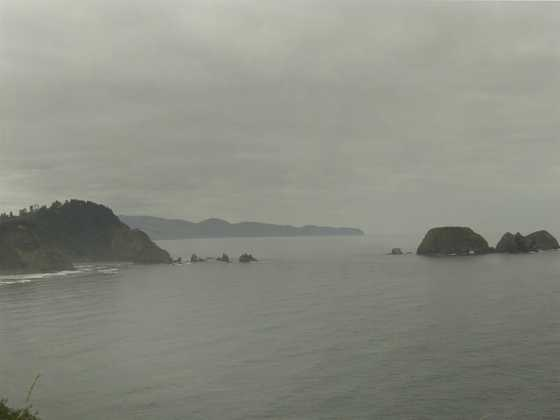
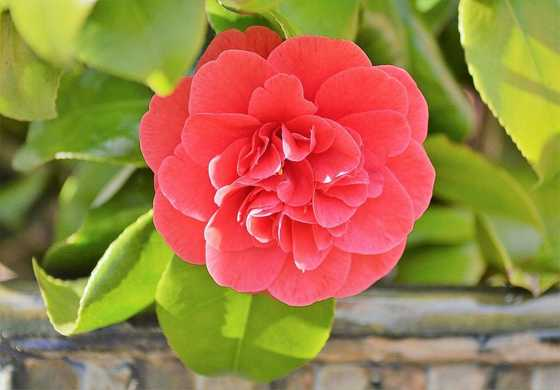
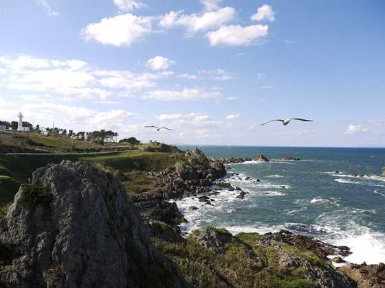
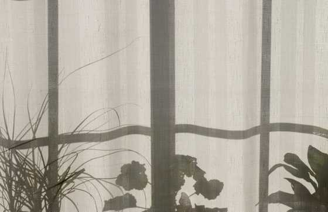
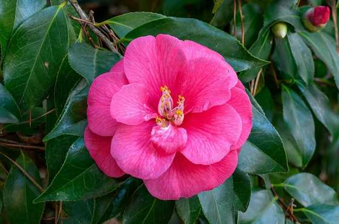

長崎県五島市吉田町の美容室
SHANTI
島の凪のように、
心と髪をゆるめる時間を。
SHANTI(シャンティ)は、「平和・安らぎ」を意味する言葉として知られる名前の美容室です。
ABOUT
お店の名前と、確認できたこと
「シャンティ(shanti)」は、サンスクリット語で「平和・安らぎ」を意味する言葉として知られています。五島市吉田町にある美容室SHANTIは、Instagram(@shanti.hair)で髪のことを中心に発信しており、まつ毛用の美容液などの商品、アロマやボディケアに関する学びの投稿も見られます。
Instagramには「KIDS」のハイライトがあり、子どもに関する内容も紹介されているようです。現在は新規のご予約を停止中で、空きが出たときにストーリーでお知らせしているとのことです。
情報源: Instagram @shanti.hair / 地域の店舗情報サイト(所在地・不定休の記載)
店名の由来や、お店の理念について公開されている情報は確認できませんでした。「島の凪のように」という見出しは、店名の意味と五島の海から制作側が思い描いたイメージで、お店の言葉ではありません。

IMAGE
やすらぎのイメージ
写真はすべてフリー素材のイメージです。五島市や実際のお店・施術の様子ではありません。





VOICE
口コミ イメージ例
以下は制作側が想像して書いた例で、実在のお客様の声ではありません。
イメージ例席に座ると、肩の力がすっと抜けて、帰り道の海がいつもよりきれいに見えました。
イメージ例髪の悩みをゆっくり聞いてもらえて、急かされない時間がありがたかったです。
イメージ例子どもと一緒でも気兼ねなく過ごせそうで、また通いたいと思いました。
ACCESS
アクセス
| 所在地 | 〒853-0042 長崎県五島市吉田町2564-2 |
|---|---|
| 電話 | 準備中 |
| 営業時間 | 準備中 |
| 定休日 | 準備中 |
| ご予約 | 現在、新規のご予約は停止中とのこと(Instagramでご確認ください) |
| SNS | Instagram @shanti.hair |